Brotherize is a social fitness app built on a simple bet: people stay consistent when someone they respect is watching. Posts don't get "likes" — they get upvotes that convert into points, streaks, and rank. I was brought on as the sole product designer to take the concept from discovery through a fully designed iOS product, shipped as an MVP on the App Store.
0→1
Full product designed from concept to shipped MVP
40+
Screens designed across onboarding, feed, challenges & profile
3
Core loops engineered for retention: vote, compete, climb rank
Live
Shipped and available as a working MVP on the App Store
01 — Context
Most fitness apps track reps and calories for an audience of one. Brotherize starts from a different premise: men stay consistent when someone they respect can see their effort. The product's whole identity — "Be the Rize" — is built around a brotherhood of accountability partners who post their training, vote on each other's effort, and climb a shared rank ladder together.
I was brought on as the sole product designer on a contract engagement, working directly from the founder's concept to take Brotherize from an early idea to a fully designed, developer-ready iOS product — covering onboarding, the social feed, the challenge system, and the points economy that ties the whole loop together.
"Convince your brother to tackle your most dreaded exercise. Record it in a video or picture and reply to this post."
— an in-app daily challenge prompt
02 — Problem
Translating "accountability" into an actual product meant solving three connected design problems before a single high-fidelity screen got drawn.
Generic engagement doesn't reward real effort
A flat "like" treats a genuine training partner's support the same as a passive scroll-past tap. In a community built around pushing each other, the feedback mechanic needed to carry weight — and feed something bigger than the post itself.
No recurring reason to come back today specifically
An open, unstructured feed is something you check when you remember to. It doesn't create urgency. Without a time-boxed hook, "brotherhood accountability" is just a nicer word for a workout photo feed.
Gamification is hollow unless the reward is real
Points and badges are cheap to design and easy to ignore. For a rank system to motivate a fitness-minded, competitive audience, progress needed to be transparent — and redeemable for something outside the app.
03 — Process
Working solo on the design side, the priority was making sure the core retention loop — post, vote, earn, rank, redeem — held together logically before investing in visual polish.
Design thinking framed every stage: understand the founder's vision and the audience it's for, define the mechanics that would actually hold attention, then prototype and refine in Figma before handing a build-ready file to engineering.
1
Discovery & concept alignment
Worked directly with the founder to translate "brotherhood accountability" into a concrete feature set — a social feed, a directional voting mechanic, a challenge system, and a points-based rank ladder — before any UI existed.
2
User research & competitive analysis
Looked across social fitness apps and gamified consumer products to identify which mechanics — streaks, tiered progression, redeemable points — translate credibly to a male fitness audience without reading as gimmicky or juvenile.
3
Wireframing the core loop
Mapped post → vote → points → rank → redeem as a single connected system before styling anything, to confirm the mechanic that was supposed to drive daily retention actually worked end to end for a new user.
4
High-fidelity visual design
Designed a dark, high-contrast, green-on-black identity in Figma befitting a competitive, masculine fitness brand — including a rank ladder (Snake through Dragon-tier ranks like Cerberus) with badge art that feels earned rather than childish.
5
Prototyping & handoff
Built a full interactive prototype covering 40+ screens — onboarding, auth, feed, challenges, profile, and settings — and handed a build-ready file to engineering. The MVP shipped to the App Store from this handoff.
First-run coachmark tour
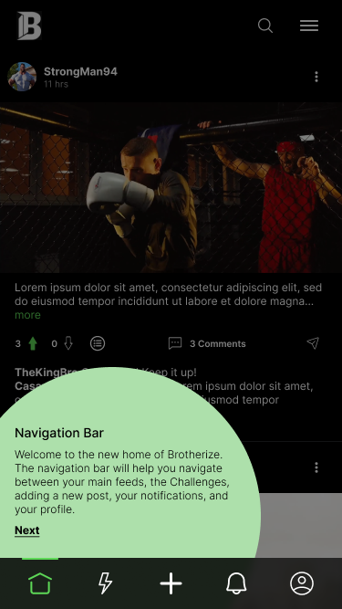
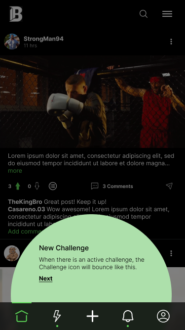
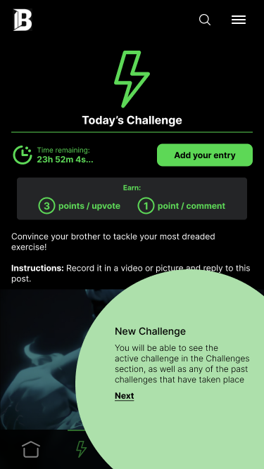
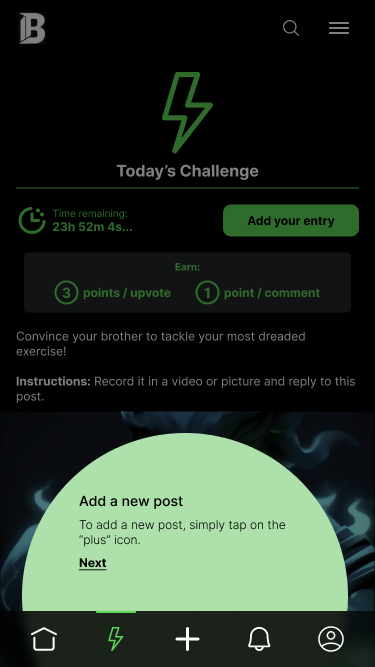
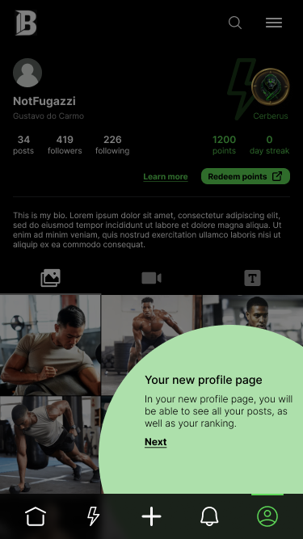
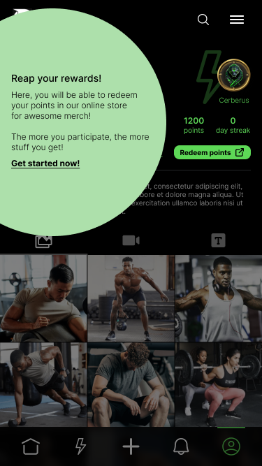
04 — Design decisions
Each decision traces back to one of the three problems above — turning a vague "accountability" pitch into mechanics a new user could feel within their first session.
01
Upvote / downvote replaces "like"
Every vote feeds directly into the points economy (3 points per upvote received) that drives rank and rewards — so reacting to a post carries real weight instead of being a throwaway gesture. Votes are also attributable, not anonymous: a dedicated Voters screen shows exactly who upvoted or downvoted, which keeps feedback honest in a community that's explicitly about accountability rather than vanity metrics.
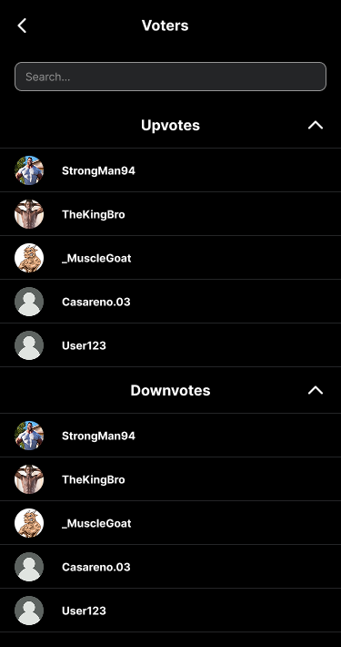
Rejected: A single-tap "like" button. A like carries no weight in a rank-based economy — it would decouple the social feedback loop from the reward loop that's the product's core hook.
02
Points, streaks & a redeemable rank ladder
A multi-tier rank ladder — from a low-level Snake up through Dragon-tier ranks like Cerberus — gives members a name and a badge for their progress, and every point is itemized in a Points History log (daily streak, comment, upvote received) so scoring never feels like a black box. Crucially, points redeem for physical merch through the Brotherize store, closing the loop from digital status to a real-world reward.
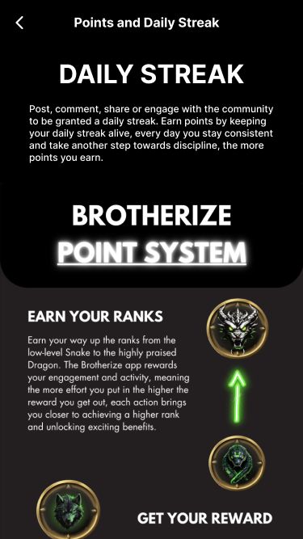
Rejected: Purely cosmetic badges. Badges alone don't extend the habit loop past the app itself, and give the user no explanation of why they were earned or what they're worth.
03
Timed daily challenges, not an open feed
A single daily prompt with a hard countdown ("23h 52m remaining…") gives the whole community one shared thing to respond to, instead of a diffuse, infinite feed. Entries get their own voting and comment thread, turning a daily workout into a small, time-boxed competition rather than just another post.
Rejected: Open-ended, optional challenges with no timer. Urgency — the countdown, the daily streak — is what turns a nice-to-have feature into a reason to open the app today specifically.
04
In-context onboarding, not a tutorial
The 6-step first-run tour spotlights the nav bar, the challenge icon, the profile, and the rewards system directly on the real, already-populated feed — so the first session doubles as the first lesson, with nothing to skip past before reaching real content.
Rejected: Dedicated "how it works" onboarding slides shown before the app itself. Static slides are abstract and easy to tune out; teaching a feature where it actually lives sticks better.
05 — Key screens
From first launch to redeeming points, the design covers the complete member journey — onboarding, feed, challenges, profile, and the utility screens that hold it all together.
Each screen carries a single clear job, from the first-run coachmarks through to the utility screens that round out the settings and moderation experience.
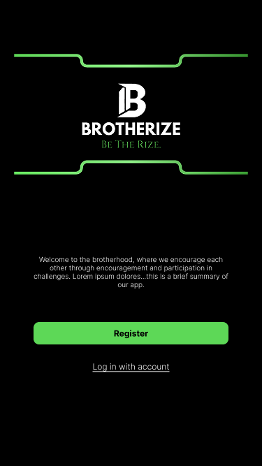
WelcomeWelcome
First-run splash introducing the brotherhood positioning before signup.
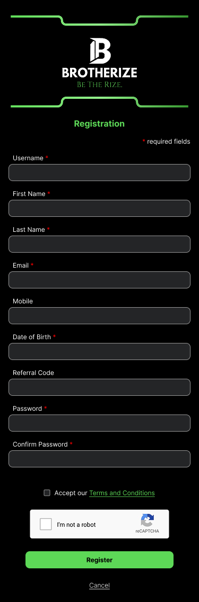
AuthRegistration
Full profile capture up front, including an optional referral code for brotherhood invites.
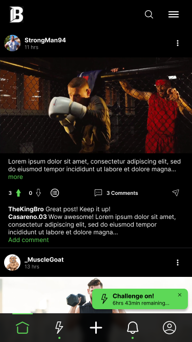
FeedHome feed
Upvote/downvote, comment threads, and a bouncing challenge banner surface directly in the feed.
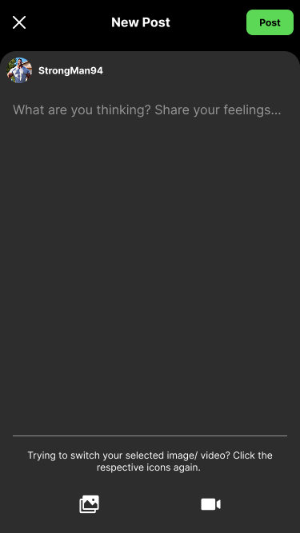
PostNew post
Simple photo/video composer — no friction between finishing a set and posting proof of it.
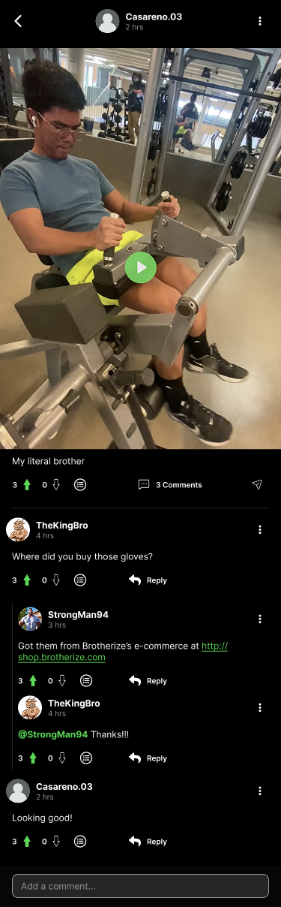
FeedComment thread
Threaded replies encourage back-and-forth banter — community, not just reactions.
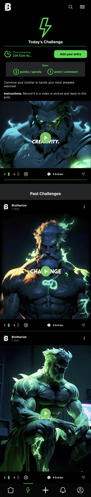
ChallengesPast challenges
Every prior daily challenge stays browsable, with vote counts and entry totals intact.
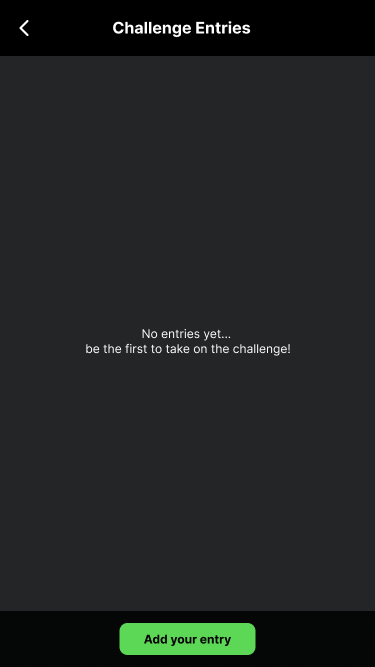
ChallengesEntries — empty state
A direct call to action to be first, rather than a blank screen with nothing to do.
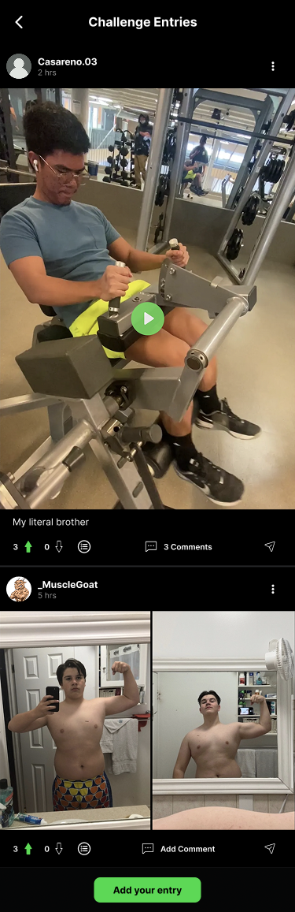
ChallengesEntries feed
Each entry gets its own vote and comment thread, separate from the general feed.
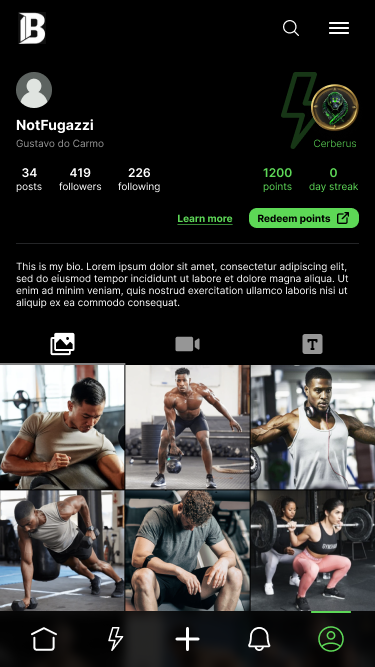
ProfileMy profile
Rank badge, points, streak, and a redeem-points CTA sit above the post grid — status is always visible.
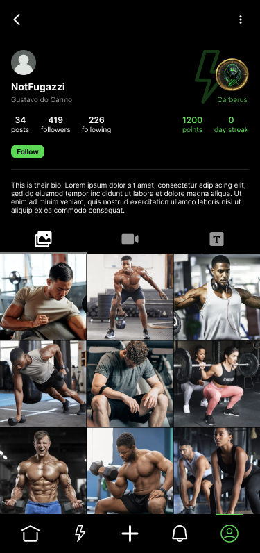
ProfileAnother member's profile
Same status signals shown on every profile — rank is a public, comparable thing.
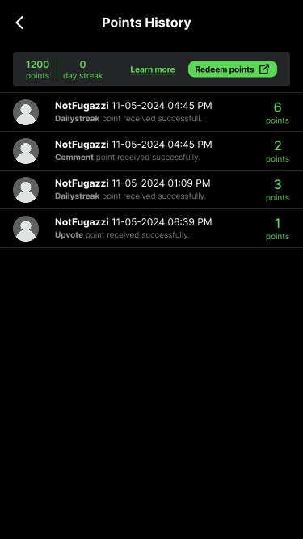
RewardsPoints history
An itemized ledger of every point earned and why — daily streak, comment, upvote received.
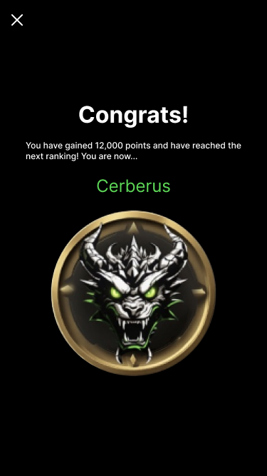
RewardsRank-up celebration
A full-screen moment when a member crosses into a new rank tier — progress made visible.
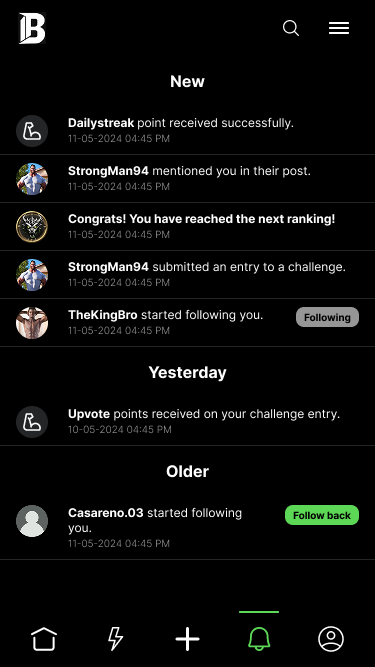
UtilityNotifications
Mentions, follows, challenge entries, and point events grouped by recency.
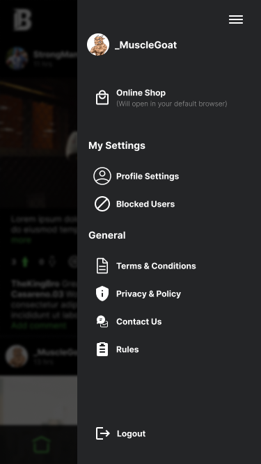
UtilityMenu
Links out to the Brotherize online shop where points-based rewards are redeemed.
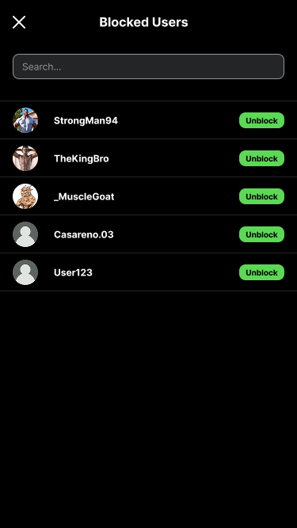
UtilityBlocked users
Basic moderation controls — a necessity for any app built around public, competitive posting.
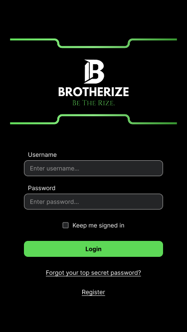
AuthLogin
The green-on-black identity established from the very first screen a user sees.
06 — Scope & constraints
Brotherize was a contract engagement: I owned end-to-end mobile product design, from discovery through wireframes, high-fidelity UI, and a build-ready interactive prototype in Figma.
A separate engineering team built the iOS app itself, the backend and points logic, and the external merch storefront that redeemed points connect out to. The design work shown here is the full scope of my contribution — the mechanics, the visual system, and the screens engineering built from.
Why I'm including this project
Brotherize is the clearest example in my portfolio of owning a product's design from a one-line founder pitch to something an engineering team could actually build — including the parts of the job that aren't visual design at all: figuring out which gamification mechanics would hold up under daily use, and which would feel hollow within a week.
07 — Reflection
The rank ladder and points economy were designed before real usage data existed to tune them against. I'd want a second pass once the app had live members — specifically, checking whether the point values (3 per upvote, 1 per comment) actually produced the daily-return behaviour they were designed for, or needed rebalancing.
I'd also push earlier for a lightweight way to test the challenge cadence itself — daily worked well on paper, but only real retention data can confirm whether daily is too frequent, or exactly right, for this audience.
Designing a gamification system is a different discipline from designing a screen. The visual design — the rank badges, the green-on-black identity — is the part that's easy to show. The harder, less visible work was making sure every point, streak, and rank tier connected back to a behaviour worth reinforcing, rather than existing as decoration.
Owning a product 0-to-1 as a solo contractor also meant being the only check on scope. Every screen had to earn its place in the 40-screen build, because there was no larger design team to catch something that didn't serve the core loop.